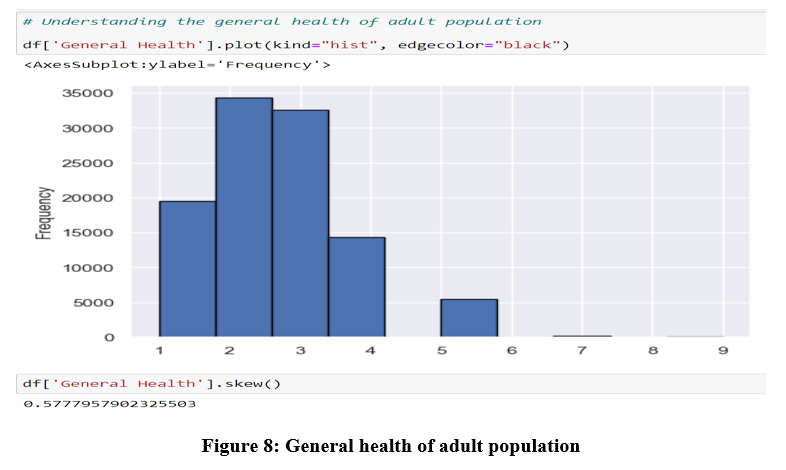

Education
MSc IT in Data Analytics
London Metropolitan University
March 2021 - May 2023
- Coursework: Risk Stratification among diabetic patients using R programming
- Honors and awards: AAA Scholarship | April 2024
Bachelor's in Computer Engineering
Tribhuvan University
November 2015 - September 2019
Certifications
Microsoft Certified: Azure AI Fundamentals November 2024
Possess in-depth knowledge of advanced machine learning algorithms (e.g., clustering, decision tree learning, artificial neural networks) and mathematical and statistical concepts, gained through Microsoft Azure AI certification, with a clear understanding of their real-world advantages and drawbacks for effective AI solution implementation.
Verification: View Certification
Work Experience
Data Analyst / Associate ML Engineer
GritFeat Solutions, Kirtipur, Nepal
May 2021 – September 2022
- Utilized Python libraries such as Pandas and Matplotlib to analyze a dataset of 20,000+ customer transactions, identifying key sales trends and customer preferences that developed targeted marketing strategies, leading to a 15% increase in customer engagement.
- Analyzed customer purchasing patterns through time series methods, generating actionable insights that led to a reduction in stock outs by 20%, ensuring consistent product availability for high-demand items.
- Collaborated with cross-departmental teams to streamline sales forecasting and reporting processes, reducing forecast errors by 10% and improving reporting efficiency by 20% through enhanced data visualization and analysis.
- Assessed data accuracy by developing Python scripts to implement validation checks, reducing data quality issues by 25% and enhancing the reliability of analytics and reporting processes.
Enterprise Analyst
WorldLink Communications, Kathmandu, Nepal
Feb 2020 – September 2020
- Collaborated with cross-functional teams to implement models, monitor performance, and ensure alignment with business objectives, driving data-driven decision-making and continuous improvement.
- Successfully executed advanced analytics projects, driving data-informed decision-making and achieving up to 20% process efficiency improvement.
- Analyzed system logs and performance metrics using Python and SQL to identify patterns, preventing recurring issues and reducing system downtime by 15%.
- Conduct advanced data analysis to identify emerging trends and actionable insights, supporting data-driven decision-making and strategic business initiatives through scientific methodologies.
Accomplishments
Behavioral risk factor analysis based on preventive health practices and risk behaviors
- Goal: Analyze state-specific data on preventative health measures and risk behaviors related to chronic illnesses and preventable diseases using Python.
- Methodology: Applied Exploratory Data Analysis (EDA), statistical testing, and machine learning to identify patterns, enhance prediction accuracy, and provide data-driven insights.
- Description: This analysis will be highly useful to understand the preventive health practices and risk behaviors that are linked to chronic diseases, injuries, and preventable infectious diseases in the adult population. This analysis will provide a wide range of opportunities to explore different factors that affect our health on a day-to-day basis. Hence, at the end of this analysis, we were able to understand the risks associated with the behavior of an adult. 
- GitHub: View Project